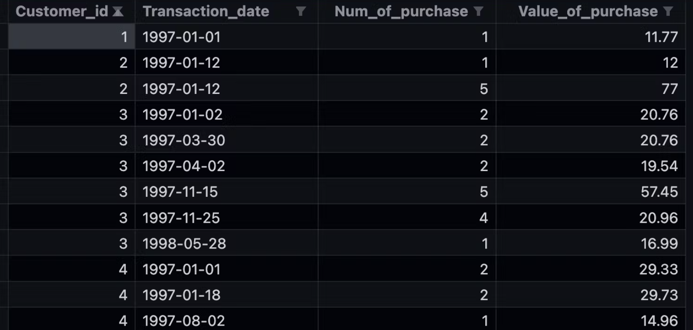
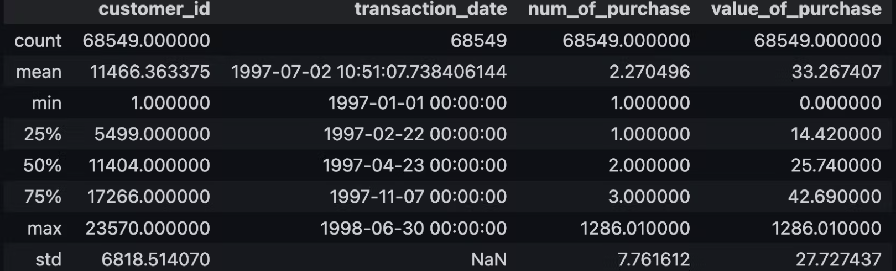
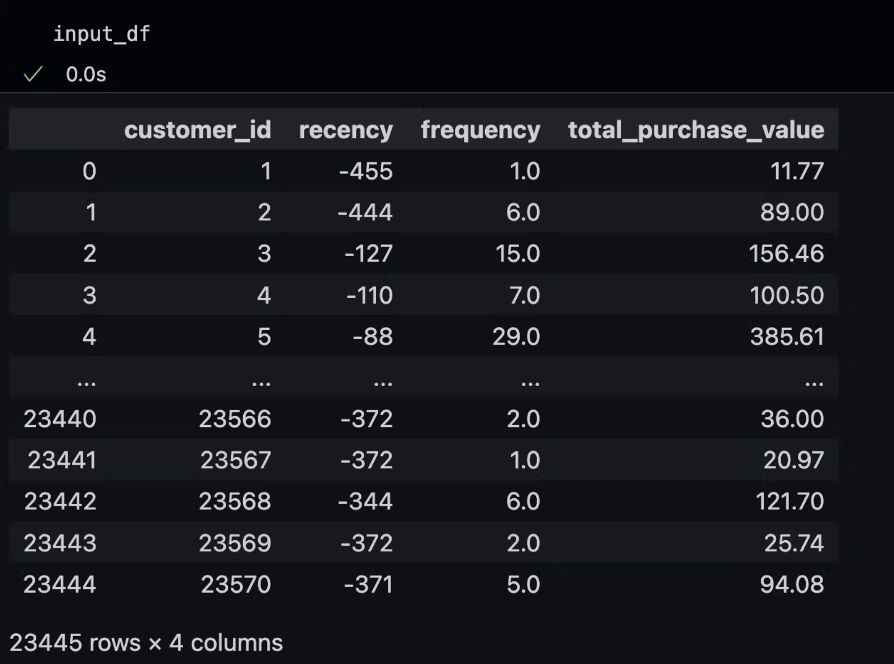
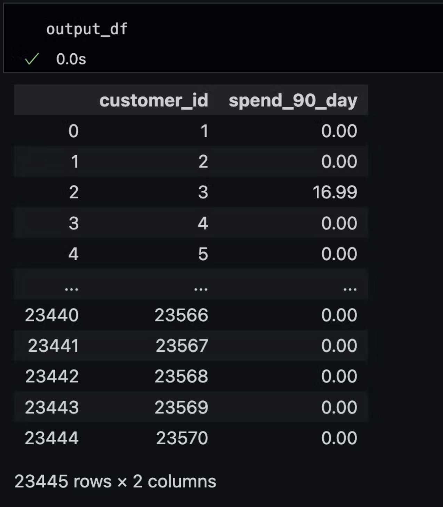
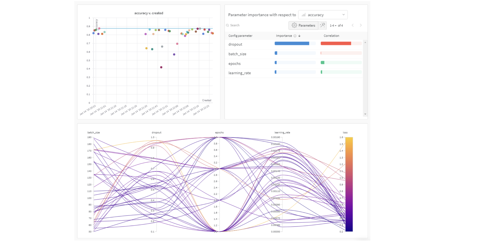
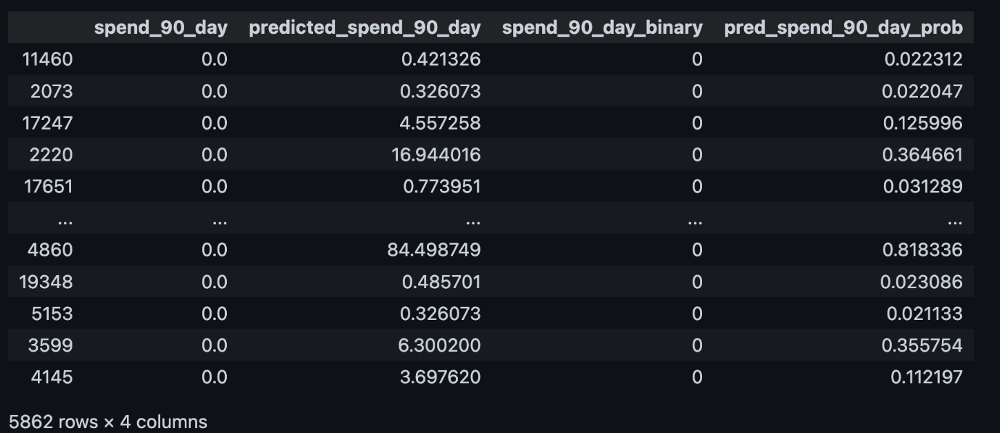

Unlocking Business Growth: Harness ML to Predict Customer Lifetime Value
Machine Learning (ML) plays a vital role in understanding and predicting CLV with greater accuracy and precision. The complexity and vastness of customer data make it challenging to extract meaningful insights manually. However, ML algorithms can analyze large datasets, identify patterns, and make data-driven predictions, providing businesses with valuable intelligence regarding CLV.
Table of Content
Introduction
Customer Lifetime Value (CLV) is a metric that represents the predicted net profit a business can expect to generate from a customer during their entire relationship with that business. It calculates the total value a customer brings over their lifetime, taking into account factors like purchase history, average order value, purchase frequency, and customer retention rate. CLV helps businesses quantify and understand the economic worth of individual customers and their impact on long-term revenue.
Due to its significance, CLV exhibits varied practical applications:
- Marketing and Customer Acquisition: CLV helps identify the most valuable customer segments based on their potential lifetime value, allowing businesses to tailor marketing campaigns and acquisition strategies accordingly. It enables accurate targeting and more efficient customer acquisition efforts.
- Customer Retention and Loyalty: By understanding CLV, businesses can identify customers with high long-term value and invest in customer retention initiatives to enhance loyalty. CLV analysis helps determine the most effective retention strategies and allocate resources to maximize customer satisfaction and loyalty.
- Forecasting Revenue: CLV helps forecast future revenue by estimating the expected spending of existing customers over time. It provides insights into customer behavior, enabling businesses to predict future revenue streams, plan budgets, and set growth targets more accurately.
- Competitive Advantage: Businesses that effectively leverage CLV gain a competitive advantage in their market. By optimizing customer acquisition, retention, and marketing strategies based on CLV insights, companies can outperform competitors in terms of profitability, customer satisfaction, and market share.
- Long-term Business Sustainability: CLV focuses on sustainable business growth by prioritizing long-term customer value over short-term gains. By understanding and maximizing customer lifetime value, businesses can build strong, enduring customer relationships for consistent revenue generation and overall business sustainability.
How to Calculate CLV
Basic CLV
The basic formula of CLV simply multiplies the average purchase value, average purchase frequency, and average customer lifespan. Here lifespan refers to the duration of the customer's relationship with a business. With the customer's lifespan factored in, the CLV provides a more accurate and comprehensive understanding of the customer's long-term value, which allows businesses to make informed decisions regarding customer retention strategies, acquisition costs, and overall profitability.
Note: If our business is new and we lack enough data to calculate the lifespan of customers, we can derive it by using the churn rate:
CLV After COGS
To get a more accurate idea of the profitability of each customer, we will need to factor in our gross margin or the percentage of our total revenue that remains after subtracting the cost of goods sold (COGS):
The adjusted CLV should be rewritten as:
Other Approaches
Although we saw one simple CLV formula and the adjusted CLV formula above, there aren't just two ways to calculate CLV. Here are several approaches, including historical, predictive, and traditional, and the best method to use depends on our business type and resources:
- Historical Approach: Calculate CLV based on the gross profit our business has made in the past. We can compute historical CLV using either Average Revenue Per User (ARPU) or Cohort Analysis. For example:
- Predictive Approach: Measure the total value a customer will give a business eventually over their lifetime. It's based on both historical transactions and current customers' behavioral trends, such as purchase frequency. Predictive CLV helps us understand the present worth of a customer and forecast how their value will change in the future. This may help you launch targeted campaigns and prioritize your acquisition and engagement activities so that they attract and retain customers with high lifetime value.
Note: T stands for the average number of transactions per month, AOV represents the average order value, AGM is the average gross margin, and ALT stands for the average customer lifespan (in months).
- Traditional Approach: The traditional CLV formula incorporates the average gross margin per customer lifespan (GML), retention rate (R), and discount rate(D). The discount rate, which is included to account for inflation. Generally, a discount rate of 10% is used for SaaS businesses.

Industry Applications
Exploring the diverse applications of CLV within various industries reveals the immense potential it holds as a strategic tool. As businesses increasingly prioritize customer-centric approaches, understanding the long-term value of their customer base becomes paramount. From e-commerce giants to telecommunications providers, industry leaders have harnessed the power of CLV to drive profitability, guide marketing efforts, and enhance customer experiences.
For example, a lot of Amazon's success can be attributed to its focus on leveraging data analysis and customer insights to create personalized experiences for users. By surprising and delighting their customers with benefits and features such as same-day shipping and free returns, Amazon has built an extremely loyal customer base. Amazon has focused on offering amazing benefits to their Prime customers because these subscribers have a high CLV. "Brendan Mathews, a research analyst at Motley Fool has published his research on Amazon concluding that the average Prime subscriber has a CLV of $2283, more than twice the CLV of a non-subscriber."
Another interesting example is Starbucks. Guess how much an average customer is worth to Starbucks? Think about the coffee you are going to buy from Starbucks over the years. $500 worth? $1000 worth? Or $2000?
How about $14,000? That's right! Starbucks calculated that the average lifetime value of their customer is $14,099. Knowing this number for your company can drastically change how you look at your marketing. Starbucks marketers know that they aren't selling a $5 cup of coffee, they are acquiring a $14k customer.
However, every customer isn't equal, and in the case of Netflix, this is especially true. Why? Well, some customers won't stay on board for even a month while others may stay on for 5 years or never even cancel...
By tracking each customer individually, Netflix can optimize its lifetime value. For example, they know if don't continually rent movies, you'll cancel sooner or later. Because of this, they added features like a queue where you can create a list of all the movies you want to watch. So after you are done watching a movie, they keep on sending you more discs because you've told them what you want to watch. To go one step further, they know that customers are impatient and some customers cancel because they don't like waiting for movies to arrive in the mail. Due to this, they've added a feature where you can stream movies on the web, which not only satisfies your movie urge, but it keeps you busy while you are waiting.
By tracking these stats and behavior, Netflix has reduced its churn rate to 4%.
There are a lot of such examples out there. I won't list them one by one here, but in conclusion, whether in e-commerce, hospitality, entertainment, or beyond, industry leaders have embraced CLV to gain a comprehensive understanding of their customer base and create targeted strategies that cultivate loyalty and maximize customer lifetime value. As businesses continue to prioritize customer-centric approaches, the effective utilization of CLV remains a key ingredient for success, enabling organizations to thrive in an increasingly competitive market landscape.
Significance of ML in Understanding CLV
Machine Learning (ML) plays a vital role in understanding and predicting CLV with greater accuracy and precision. The complexity and vastness of customer data make it challenging to extract meaningful insights manually. However, ML algorithms can analyze large datasets, identify patterns, and make data-driven predictions, providing businesses with valuable intelligence regarding CLV.
ML algorithms can also continuously learn and adapt to evolving customer trends, refining the accuracy of CLV predictions over time. Ultimately, ML empowers businesses to unlock the full potential of CLV, driving profitability and fostering long-term customer relationships.
Some examples of how ML can be applied to enhance CLV analysis include:
- Customer Segmentation: ML algorithms can be utilized to analyze customer data to segment them into different groups based on various attributes such as demographics, behavior, buying patterns, and preferences. This allows businesses to create personalized marketing campaigns, tailored product offerings, and targeted retention strategies for each segment, ultimately maximizing CLV.
- Churn Prediction: ML models can predict the likelihood of customer churn based on behavior and other relevant data points. By identifying customers at risk of leaving, businesses can take proactive actions to retain them, such as offering personalized incentives, improving customer service, or providing targeted recommendations.
- Next Best Offer Recommendation: ML algorithms can also be used to predict the most suitable offers or recommendations for each customer. By leveraging ML, businesses can enhance cross-selling and upselling opportunities, increasing both customer satisfaction and CLV.
- CLV Prediction: ML models can be trained on historical customer data to accurately predict CLV for individual customers or customer segments. These predictions can assist businesses in making strategic decisions regarding resource allocation, budgeting planning, and customer acquisition efforts.
- Dynamic Pricing: ML algorithms can analyze market conditions, customer behavior, and purchase history to optimize pricing strategies. By dynamically adjusting prices based on real-time factors, businesses can maximize revenue while considering CLV implications.
Example: Customer Spending Prediction Using XGBoost with Python
In the subsequent sections of this blog, I will guide you through the process of utilizing ML to predict CLV within a specified period, leveraging historical customer purchase data. The content will be organized as follows, providing a comprehensive overview:
- Project Goal
- Data Preparation & Feature Engineering
- Model Training & Hyperparameter Tuning for Spending Prediction
- Model Evaluation for Spending Prediction
- Spending Probability Prediction
- Summary
Project Goal
Utilize ML algorithms, specifically XGBoost, to predict customers' spending (regression task) and spending probability (classification task) over the next 90 days given their historical transaction data.
The dataset we use here is the CDNow dataset containing 68,549 customer transaction records from January 1, 1997, to June 30, 1998. It's open-sourced and can be downloaded via Kaggle or Bruce Hardie: Datasets.
The full dataset contains 4 features( customer_id, transaction_date, num_of_purchase, and value_of_purchase) and 23,447 unique customers. A glimpse into the data and its statistical summary is presented below:
 Data Preparation
The data preparation process encompasses crucial steps such as detecting and addressing missing values and inconsistencies, while also ensuring optimal data transformation into desired formats.
import pandas as pd
# read data
df = pd.read_csv("../data/sample_data.csv")
# convert transaction date into datetime format
df["transaction_date"] = pd.to_datetime(df["transaction_date"])
# convert num_of_purchse and value_of_purchase to numerics
df["num_of_purchase"] = pd.to_numeric(df["num_of_purchase"])
df["value_of_purchase"] = pd.to_numeric(df["value_of_purchase"])
# drop missing values
df = df.dropna()
Variation of total purchase value by time and variation of total purchase frequency by time:
# total value of purchases by transaction date
total_value_by_date = df.groupby("transaction_date")[["value_of_purchase"]].sum()
# total number of purchases by transaction date
total_numofpurchase_by_date = df.groupby("transaction_date")
[["num_of_purchase"]].sum()
import seaborn as sns
import matplotlib.pyplot as plt
fig, ax = plt.subplots(1, 2, figsize=(18, 5))
# plot data
g1 = sns.lineplot(
data=total_value_by_date,
x="transaction_date",
y="value_of_purchase",
color="gray",
ax=ax[0])
g1.legend(labels=["Total Value of Purchases by Transaction Date"])
g1.set(ylabel=None)
g1.set(xlabel=None)
g2 = sns.lineplot(
data=total_numofpurchase_by_date,
x="transaction_date",
y="num_of_purchase",
color="black",
ax=ax[1])
g2.legend(labels=["Total Number of Purchases by Transaction Date"])
g2.set(ylabel=None)
g2.set(xlabel=None)
plt.show()
Customer segmentation by total purchase value and by total purchase frequency:
total_value_by_customer = df.groupby("customer_id")["value_of_purchase"]
.sum().reset_index()
total_frequency_by_customer = df.groupby("customer_id")["num_of_purchase"]
.sum().reset_index()
import seaborn as sns
import matplotlib.pyplot as plt
fig, ax = plt.subplots(1, 2, figsize=(18, 5))
# plot data
g1 = sns.scatterplot(
data=total_value_by_customer,
x="customer_id",
y="value_of_purchase",
color="gray",
ax=ax[0],
size="value_of_purchase")
g1.legend(labels=["Total Value of Purchases by Customer"])
g1.set(ylabel=None)
g1.set(xlabel=None)
g2 = sns.scatterplot(
data=total_frequency_by_customer,
x="customer_id",
y="num_of_purchase",
color="black",
ax=ax[1],
size="num_of_purchase")
g2.legend(labels=["Total Number of Purchases by Customer"])
g2.set(ylabel=None)
g2.set(xlabel=None)
plt.show()
Note: Bigger dots symbolize customers who exhibit higher purchase value or purchase frequency.
Feature Engineering
Feature engineering process includes creating time-based RFM features, such as recency, frequency, and monetary features as input variables:
- Recency: The number of days between the latest transaction date and the earliest prediction date for each customer
- Frequency: The total number of purchases made by each customer over the historical data period (before the earliest prediction date)
- Monetary Features: E.g., total purchase value, average purchase value, STD of purchase value, or average time between purchases, etc. In our case, we will be using the total value of purchases as the monetary feature.
Before getting the RFM for each customer, we need to separate our dataset into the historical period and prediction period. The separating point is decided by the earliest prediction date:
from datetime import timedelta
earliest_prediction_date = max(df["transaction_date"]) - timedelta(days=90)
earliest_prediction_date
==============================================
Output:
Timestamp('1998-04-01 00:00:00')
Note: To forecast spending for the next 90 days, we will utilize historical data ranging from January 1, 1997, to April 1, 1998, for modeling purposes. The prediction period will consist of data from April 1, 1998, onwards.
# only keep customers that have records before `earliest_prediction_date`
historical_df = df[df["transaction_date"] < earliest_prediction_date]
Calculate RFM features and save them into input_df:
# calculate recency
historical_df["date_diff"] = historical_df[["transaction_date"]]
- earliest_prediction_date
input_df = historical_df.loc[historical_df.groupby('customer_id')['date_diff'].
idxmax()][["customer_id", "date_diff"]]
input_df = input_df.rename(columns={"date_diff": "recency"})
# calculate frequency
input_df = pd.merge(input_df, historical_df.groupby("customer_id")
["num_of_purchase"].sum().reset_index(), on='customer_id')
input_df = input_df.rename(columns={"num_of_purchase": "frequency"})
# monetary feature: calculate the total value of purchase for each customer
total_value_by_customer = total_value_by_customer.rename(
columns={"value_of_purchase": "total_purchase_value"})
input_df = pd.merge(input_df, total_value_by_customer, on='customer_id')
Calculate spend over the next 90 days for each customer and save them into output_df:
# calculate the spend over the next 90 days for each customer,
#if customer does not have records after earliest prediction date,
#then we set the spend_90_day as 0
prediction_df = df[df["transaction_date"] >= earliest_prediction_date].
groupby("customer_id")["value_of_purchase"].sum().reset_index()
spend_90_day = []
for id in input_df["customer_id"].values:
if id in prediction_df["customer_id"].values:
spend_90_day.append([id, prediction_df[prediction_df["customer_id"]==id]
["value_of_purchase"].values[0]])
else:
spend_90_day.append([id, 0])
output_df = pd.DataFrame(spend_90_day, columns=["customer_id", "spend_90_day"])
Up to this stage, we have computed the recency, frequency, and total purchase value for each customer before the earliest prediction date, and the spending for each customer after the earliest prediction date. Moving forward, our next step involves training an XGBoost model, where the input variables will consist of recency, frequency, and total purchase value, while the target will be spend_90_day.
 Model Training & Hyperparameter Tuning for Spending Prediction
The process of model training and hyperparameter tuning includes several key steps:
1) Split the dataset into train/test sets:
# data
data = pd.merge(input_df, output_df, on="customer_id")
# split the data
from sklearn.model_selection import train_test_split
X, y = data.drop(columns=["customer_id", "spend_90_day"]), data[["spend_90_day"]]
X_train, X_test, y_train, y_test = train_test_split(X, y, random_state=1)
2) Load the data efficiently into DMatrices to enhance memory efficiency and training speed:
# load data into DMatrices
import xgboost as xgb
dtrain_reg = xgb.DMatrix(X_train, y_train)
dtest_reg = xgb.DMatrix(X_test, y_test)
3) Construct a baseline model:
# build a baseline model
from sklearn.metrics import mean_squared_error
import numpy as np
# use average spend for training set as prediction on the test set
mean_train = np.mean(y_train)
baseline_predictions = np.ones(y_test.shape) * mean_train
# compute rmse
rmse_baseline = mean_squared_error(y_test, baseline_predictions, squared=False)
print("Baseline RMSE is {:.2f}".format(rmse_baseline))
==============================================
Output:
Baseline RMSE is 32.22
Note: By employing the average spend from the training set as the prediction for the test set, we achieved an RMSE of 32.22. It is important to note that this result serves as a benchmark, and with the utilization of XGBoost, we anticipate attaining improved outcomes.
4) Model training with default config:
# default config
params = {
"max_depth": 6,
"min_child_weight": 1,
"eta": 0.3,
"subsample": 1,
"colsample_tree": 1,
"objective": "reg:squarederror",
"eval_metric": "rmse"
}
num_boost_round = 999 # set number of boosting round as 999, and let early stopping technique decides where to stop
model = xgb.train(
params,
dtrain_reg,
num_boost_round=num_boost_round,
evals=[(dtest_reg, "Test")],
early_stopping_rounds=10
)
==============================================
Output:
[0] Test-rmse:27.96674
[1] Test-rmse:25.15509
[2] Test-rmse:23.23015
[3] Test-rmse:22.52315
[4] Test-rmse:21.38583
[5] Test-rmse:20.69144
[6] Test-rmse:20.55333
[7] Test-rmse:20.25883
[8] Test-rmse:20.14081
[9] Test-rmse:20.02882
[10] Test-rmse:20.01673
[11] Test-rmse:19.95667
[12] Test-rmse:20.08958
[13] Test-rmse:20.06875
[14] Test-rmse:20.08339
[15] Test-rmse:20.03260
[16] Test-rmse:20.03230
[17] Test-rmse:19.99002
[18] Test-rmse:19.98232
[19] Test-rmse:19.93058
[20] Test-rmse:19.98696
[21] Test-rmse:20.00055
[22] Test-rmse:19.96286
[23] Test-rmse:19.94905
[24] Test-rmse:20.00112
[25] Test-rmse:19.99092
[26] Test-rmse:20.00368
[27] Test-rmse:19.96424
[28] Test-rmse:20.03781
[29] Test-rmse:20.09745
# The RMSE of our model with default parameters and an optimal number of boosting rounds on the test set
print("Best MAE: {:.2f} with {} rounds".format(
model.best_score,
model.best_iteration+1))
==============================================
Output:
Best MAE: 19.93 with 20 rounds
5) Fine-tuning an XGBoost model utilizing the xgboost.cv function:
The xgboost.cv function is an essential component of the XGBoost library that facilitates cross-validation for model training and hyperparameter tuning.
To use the xgboost.cv function, we need to specify a set of parameters in a dictionary format. The function takes in the training data and automatically performs k-fold cross-validation, where the data is split into k equal-sized subsets or folds. During each round of cross-validation, the model is trained on k-1 folds and evaluated on the remaining fold. This process is repeated for each of the k folds, and the evaluation metric is computed and averaged across all the folds. The resulting average metric is used to assess the overall performance of the model.
The xgboost.cv function returns a dataframe containing the evaluation results for each boosting round. These results can be analyzed to determine the optimal number of boosting rounds and to fine-tune the model's hyperparameters.
Before diving into the details, let's have a quick understanding of the major parameters of the XGBoost algorithm:
- booster: Which booster to use, default=gbtree. Options include gbtree, gblinear or dart. gbtree and dart use tree-based models while gblinear uses linear functions.
- nthread: Number of threads used to run XGBoost, defaults to the maximum number of threads available if not set.
- eta: Learning rate, default=0.3. Typically final values to be used: 0.01-0.2.
- min_child_weight: Minimum sum of instance weight needed in a child.
- max_depth: Maximum depth of a tree, is used to control over-fitting. Default=6, typical values: 3-10.
- max_leaf_node: Maximum number of terminal nodes or leaves in a tree. If this is defined, max_depth will be ignored.
- subsample:Subsample ratio of the training instance. Subsampling will occur once in every boosting iteration, default=1.
- colsample_bytree: Subsample ratio of columns when constructing each tree.
- lambda: L2 regularization term on weights, default=1.
- alpha: L1 regularization term on weights, default=0.
- objective: Default: reg:squarederror
- eval_metric: Evaluation metric used for validation. Options include rmse, mae, logloss, error, merror, mlogloss, auc, etc.
For more details please refer to Parameter Documentation.
Note that the effectiveness and influence of these parameters can vary depending on the specific dataset and problem at hand. A comprehensive exploration and fine-tuning of these parameters using techniques like grid search or Bayesian optimization can help identify the optimal parameter combination for improved performance in XGBoost.
For our specific case, we will focus on fine-tuning the parameters max_depth, min_child_weight, subsample, colsample_bytree, and eta in a systematic step-by-step manner. Initially, we will determine the optimal values for max_depth and min_child_weight while keeping subsample, colsample_bytree, and eta at their default values. Once the optimal max_depth and min_child_weight are identified, we will proceed to find the optimal values for subsample and colsample_bytree while keeping eta unchanged. Finally, we will set the optimal subsample and colsample_bytree values and fine-tune the eta parameter using the same approach. This step-by-step process allows us to iteratively refine the model's performance by optimizing these essential XGBoost parameters.
# find the best max_depth and min_child_weight first
gridsearch_params = [
(max_depth, min_child_weight)
for max_depth in range(6,12)
for min_child_weight in range(5,8)
]
# define initial best params and rmse
min_rmse = float("Inf")
best_params = None
for max_depth, min_child_weight in gridsearch_params:
print("CV with max_depth={}, min_child_weight={}".format(
max_depth,
min_child_weight))
# Update our parameters
params['max_depth'] = max_depth
params['min_child_weight'] = min_child_weight
# Run CV
cv_results = xgb.cv(
params,
dtrain_reg,
num_boost_round=num_boost_round,
seed=42,
nfold=5,
metrics={'rmse'},
early_stopping_rounds=10
)
# Update best rmse
mean_rmse = cv_results['test-rmse-mean'].min()
boost_rounds = cv_results['test-rmse-mean'].argmin()
print("\tRMSE {} for {} rounds".format(mean_rmse, boost_rounds))
if mean_rmse < min_rmse:
min_rmse = mean_rmse
best_params = (max_depth, min_child_weight)
==============================================
Output:
CV with subsample=1.0, colsample=1.0
RMSE 24.765444647614665 for 11 rounds
CV with subsample=1.0, colsample=0.9
RMSE 24.720655152295866 for 23 rounds
CV with subsample=1.0, colsample=0.8
RMSE 24.720655152295866 for 23 rounds
CV with subsample=1.0, colsample=0.7
RMSE 24.720655152295866 for 23 rounds
CV with subsample=0.9, colsample=1.0
RMSE 25.11307020171317 for 17 rounds
CV with subsample=0.9, colsample=0.9
RMSE 25.431638743457533 for 24 rounds
CV with subsample=0.9, colsample=0.8
RMSE 25.431638743457533 for 24 rounds
CV with subsample=0.9, colsample=0.7
RMSE 25.431638743457533 for 24 rounds
CV with subsample=0.8, colsample=1.0
RMSE 25.120207059375975 for 15 rounds
CV with subsample=0.8, colsample=0.9
RMSE 25.81829156218352 for 15 rounds
CV with subsample=0.8, colsample=0.8
RMSE 25.81829156218352 for 15 rounds
CV with subsample=0.8, colsample=0.7
RMSE 25.81829156218352 for 15 rounds
CV with subsample=0.7, colsample=1.0
RMSE 25.596420505714235 for 16 rounds
CV with subsample=0.7, colsample=0.9
RMSE 25.66457239956865 for 21 rounds
CV with subsample=0.7, colsample=0.8
RMSE 25.66457239956865 for 21 rounds
CV with subsample=0.7, colsample=0.7
RMSE 25.66457239956865 for 21 rounds
print("Best subsample ratio is {}".format(best_params[0]))
print("Best colsample_bytree ratio is {}".format(best_params[1]))
print("RMSE is {}".format(min_rmse))
==============================================
Output:
Best subsample ratio is 1.0
Best colsample_bytree ratio is 0.9
RMSE is 24.720655152295866
# set the subsample and colsample_bytree to the optimal one
params['subsample'] = 1.0
params['colsample_bytree'] = 0.9
# find optimal eta
min_rmse = float("Inf")
best_params = None
for eta in [.3, .2, .1, .05, .01, .005]:
print("CV with eta={}".format(eta))
# We update our parameters
params['eta'] = eta
# Run and time CV
cv_results = xgb.cv(
params,
dtrain_reg,
num_boost_round=num_boost_round,
seed=42,
nfold=5,
metrics=['rmse'],
early_stopping_rounds=10
)
# Update best score
mean_rmse = cv_results['test-rmse-mean'].min()
boost_rounds = cv_results['test-rmse-mean'].argmin()
print("\tRMSE {} for {} rounds\n".format(mean_rmse, boost_rounds))
if mean_rmse < min_rmse:
min_rmse = mean_rmse
best_params = eta
print("Best eta: {}, RMSE: {}".format(best_params, min_rmse))
==============================================
Output:
CV with eta=0.3
RMSE 24.720655152295866 for 23 rounds
CV with eta=0.2
RMSE 24.8787644472107 for 48 rounds
CV with eta=0.1
RMSE 24.523146898754028 for 114 rounds
CV with eta=0.05
RMSE 24.686028925625255 for 244 rounds
CV with eta=0.01
RMSE 24.850914186703434 for 993 rounds
CV with eta=0.005
RMSE 25.536537118685306 for 998 rounds
Best eta: 0.1, RMSE: 24.523146898754028
# set eta to the optimal one
params['eta'] = 0.1
# now we have the best params config
params
==============================================
Output:
{'max_depth': 6,
'min_child_weight': 5,
'eta': 0.1,
'subsample': 1.0,
'colsample_bytree': 0.9,
'objective': 'reg:squarederror',
'eval_metric': 'rmse'}
# retrain the model with the best params and get the
# optimal number of boost round
model = xgb.train(
params,
dtrain_reg,
num_boost_round=num_boost_round,
evals=[(dtest_reg, "Test")],
early_stopping_rounds=10
)
==============================================
Output:
[0] Test-rmse:30.82066
[1] Test-rmse:28.90588
[2] Test-rmse:27.28671
[3] Test-rmse:26.03065
[4] Test-rmse:24.99096
[5] Test-rmse:23.99507
[6] Test-rmse:23.50182
[7] Test-rmse:23.13926
[8] Test-rmse:22.88998
[9] Test-rmse:22.45615
[10] Test-rmse:22.11573
[11] Test-rmse:21.61810
[12] Test-rmse:21.51473
[13] Test-rmse:21.30000
[14] Test-rmse:20.98321
[15] Test-rmse:20.95906
[16] Test-rmse:20.90953
[17] Test-rmse:20.91170
[18] Test-rmse:20.91576
[19] Test-rmse:20.94356
[20] Test-rmse:20.62366
[21] Test-rmse:20.66071
[22] Test-rmse:20.53513
[23] Test-rmse:20.32127
[24] Test-rmse:20.34736
[25] Test-rmse:20.21156
[26] Test-rmse:20.23513
[27] Test-rmse:20.06452
[28] Test-rmse:20.00998
[29] Test-rmse:19.91940
[30] Test-rmse:19.93027
[31] Test-rmse:19.90506
[32] Test-rmse:19.84404
[33] Test-rmse:19.86875
[34] Test-rmse:19.77256
[35] Test-rmse:19.84531
[36] Test-rmse:19.94495
[37] Test-rmse:20.06058
[38] Test-rmse:20.01489
[39] Test-rmse:20.00074
[40] Test-rmse:20.06244
[41] Test-rmse:20.04883
[42] Test-rmse:20.08795
[43] Test-rmse:20.13190
[44] Test-rmse:20.08778
# get the best model with optimal number of boost round
num_boost_round = model.best_iteration + 1
best_model = xgb.train(
params,
dtrain_reg,
num_boost_round=num_boost_round,
evals=[(dtest_reg, "Test")]
)
==============================================
Output:
[0] Test-rmse:30.82066
[1] Test-rmse:28.90588
[2] Test-rmse:27.28671
[3] Test-rmse:26.03065
[4] Test-rmse:24.99096
[5] Test-rmse:23.99507
[6] Test-rmse:23.50182
[7] Test-rmse:23.13926
[8] Test-rmse:22.88998
[9] Test-rmse:22.45615
[10] Test-rmse:22.11573
[11] Test-rmse:21.61810
[12] Test-rmse:21.51473
[13] Test-rmse:21.30000
[14] Test-rmse:20.98321
[15] Test-rmse:20.95906
[16] Test-rmse:20.90953
[17] Test-rmse:20.91170
[18] Test-rmse:20.91576
[19] Test-rmse:20.94356
[20] Test-rmse:20.62366
[21] Test-rmse:20.66071
[22] Test-rmse:20.53513
[23] Test-rmse:20.32127
[24] Test-rmse:20.34736
[25] Test-rmse:20.21156
[26] Test-rmse:20.23513
[27] Test-rmse:20.06452
[28] Test-rmse:20.00998
[29] Test-rmse:19.91940
[30] Test-rmse:19.93027
[31] Test-rmse:19.90506
[32] Test-rmse:19.84404
[33] Test-rmse:19.86875
[34] Test-rmse:19.77256
In our case, we only tuned 5 parameters. However, if you have a requirement to fine-tune a larger number of parameters at a large scale, utilizing the W&B Sweeps can be a more efficient approach. It combines the benefits of automated hyperparameter search with visualization-rich, interactive experiment tracking. Picking from popular search methods such as Bayesian, grid search, and random search is enabled. We can even scale and parallelize Sweep jobs across one or more machines.
Model Evaluation for Spending Prediction
# model evaluation
print("The RMSE for test set is :{}".format(mean_squared_error(best_model.predict(dtest_reg), y_test, squared=False)))
==============================================
Output:
The RMSE for test set is :19.772556121083614
# save the best model
best_model.save_model("best_model.pkl")
# reload saved model
loaded_model = xgb.Booster()
loaded_model.load_model("best_model.pkl")
# use it for predictions
loaded_model.predict(dtest_reg)
==============================================
Output:
array([0.421326 , 0.32607284, 4.557258 , ..., 0.32607284, 6.3001995 ,
3.69762 ], dtype=float32)
Note: XGBoost provides a method called xgb.train() that supports continued learning (updating an existing XGBoost model with new data without retraining the model from scratch). Here is an outline of the process:
import xgboost as xgb
# train and save the initial model
params = {...}
dtrain = xgb.DMatrix(data, label))
initial_model = xgb.train(params, dtrain, num_boost_round)
intial_model.save_model("initial_model.pkl")
# load the saved model for continued learning
saved_model_path = "initial_model.pkl"
loaded_model = xgboost.Booster().load_model(saved_model_path)
# update the loaded model with new data
new_dtrain = xgb.DMatrix(new_data, new_label)
updated_model = xgb.train(params,
new_dtrain,
num_boost_round,
xgb_model=loaded_model)
# save the updated model
updated_model.save_model("updated_model.pkl")
Spending Probability Prediction
Instead of merely determining the amount a customer will spend in the next 90 days, our objective is to ascertain their likelihood of spending during this period. Consequently, this section will outline the steps involved in utilizing the same algorithm to forecast the spending probability for individual customers. Modifying the objective function and evaluation metrics is all that is required to develop an XGBoost classifier, while the remaining steps can remain unchanged.
The two most popular classification objectives are:
- binary: logistic - binary classification (the target contains only two classes, i.e., cat vs. dog)
- multi:softprob - multi-class classification (more than two classes in the target)
In our case, we will add one feature spend_90_day_binary (binary feature indicating if a customer spends over the next 90 days) as the new target variable. The independent variables stay the same.
1) Data preparation:
data["spend_90_day_binary"] = np.where(data["spend_90_day"] > 0, 1, 0)
# change the target variable to spend_90_day_binary
# if customer make spending over the next 90 days, the label is set as 1, otherwise 0
X_clf = data.drop(columns=["customer_id", "spend_90_day", "spend_90_day_binary"])
y_clf = data[["spend_90_day_binary"]]
# split data
X_train_clf, X_test_clf, y_train_clf, y_test_clf = train_test_split(X_clf, y_clf, random_state=1)
# Create classification matrices
dtrain_clf = xgb.DMatrix(X_train_clf, y_train_clf, enable_categorical=True)
dtest_clf = xgb.DMatrix(X_test_clf, y_test_clf, enable_categorical=True)
2) Training:
# change the training objective and evaluation metric, other params stay the same
params["objective"] = "binary:logistic"
params["eval_metric"] = ["error", "auc"]
clf = xgb.train(
params,
dtrain_clf,
num_boost_round,
evals=[(dtest_clf, "Test")]
)
==============================================
Output:
[0] Test-error:0.11003 Test-auc:0.90371
[1] Test-error:0.10713 Test-auc:0.91596
[2] Test-error:0.10815 Test-auc:0.91760
[3] Test-error:0.10713 Test-auc:0.92044
[4] Test-error:0.10372 Test-auc:0.91958
[5] Test-error:0.10560 Test-auc:0.92329
[6] Test-error:0.10406 Test-auc:0.92260
[7] Test-error:0.10457 Test-auc:0.92090
[8] Test-error:0.10474 Test-auc:0.91923
[9] Test-error:0.10508 Test-auc:0.91737
[10] Test-error:0.10560 Test-auc:0.91536
[11] Test-error:0.10389 Test-auc:0.92080
[12] Test-error:0.10525 Test-auc:0.91952
[13] Test-error:0.10542 Test-auc:0.91825
[14] Test-error:0.10389 Test-auc:0.92250
[15] Test-error:0.10457 Test-auc:0.92167
[16] Test-error:0.10440 Test-auc:0.92059
[17] Test-error:0.10406 Test-auc:0.91959
[18] Test-error:0.10389 Test-auc:0.91865
[19] Test-error:0.10440 Test-auc:0.91745
[20] Test-error:0.10338 Test-auc:0.92112
[21] Test-error:0.10338 Test-auc:0.92023
[22] Test-error:0.10235 Test-auc:0.92302
[23] Test-error:0.10235 Test-auc:0.92516
[24] Test-error:0.10235 Test-auc:0.92461
[25] Test-error:0.10235 Test-auc:0.92646
[26] Test-error:0.10287 Test-auc:0.92584
[27] Test-error:0.10201 Test-auc:0.92739
[28] Test-error:0.10167 Test-auc:0.92695
[29] Test-error:0.10218 Test-auc:0.92805
[30] Test-error:0.10252 Test-auc:0.92759
[31] Test-error:0.10184 Test-auc:0.92871
[32] Test-error:0.10270 Test-auc:0.92941
[33] Test-error:0.10304 Test-auc:0.92918
[34] Test-error:0.10252 Test-auc:0.92987
3) Feature importance:
# feature importance
clf.get_score()
==============================================
Output:
{'recency': 449.0, 'frequency': 362.0, 'total_purchase_value': 621.0}
4) Predict spending probabilities:
# predict probabilities
pred_clf_prob = clf.predict(dtest_clf)
y_test_clf["pred_spend_90_day_prob"] = pred_clf_prob
5) Combine the regression result and classification result:
results = pd.concat([y_test, y_test_clf], axis=1)

Note: spend_90_day stands for the actual spending; predicted_spend_90_day stands for predicted spending; spend_90_day_binary is the actual label indicating if a customer spends over the next 90 days; pred_spend_90_day_prob is the predicted spending probability.
Demo with Streamlit
To show some key insights in a more interactive and informative way, I made a Streamlit app and deployed it. For more details please go to: https://customer-lifetime-value-prediction-cxjhntfbnjs.streamlit.app/.
Conclusion
Customer Lifetime Value (CLV) holds immense importance for business, serving as a powerful metric that helps optimize strategies and drive growth. Predicting CLV accurately enables businesses to segment customers effectively, identify high-value prospects, and personalize marketing efforts accordingly. It informs decisions related to customer acquisition, retention, pricing, and marketing campaign optimization. Machine Learning (ML) plays a crucial role in enhancing CLV prediction by leveraging advanced algorithms to analyze extensive customer data and generate accurate predictions. ML techniques offer scalability, accuracy, personalization, and continuous improvement, empowering businesses to make data-driven decisions, deliver tailored experiences, and maximize long-term customer value. By harnessing the predictive power of ML for CLV, businesses can unlock significant opportunities to enhance profitability, customer relationships, and overall success.